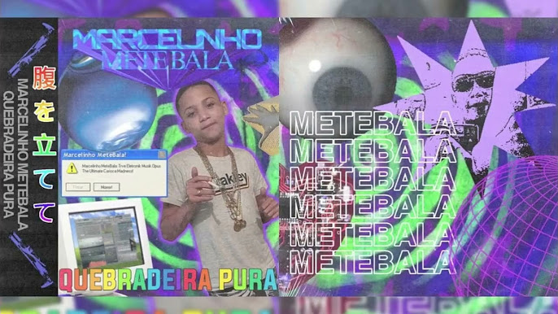

Meu primeiro post
Por: Marcelo Paludetto
Marcelinho MeteBala realmente é o Marcelinho MeteBala? Não se sabe, uma vez que a escassez de informações sobre esse nome está no mesmo nível de seu talento. No campo de busca do X/Twitter, o que mais aparece são pessoas relatando como foram fisgadas por Quebradeira Pura através dos algoritmos do YouTube, visto até então como um set ou algo do tipo. No Bandcamp, a obra surge no formato de um disco aparentemente regular, com tags que delimitam, em parte, o que está por trás do som: acid, drum and bass e jungle.
